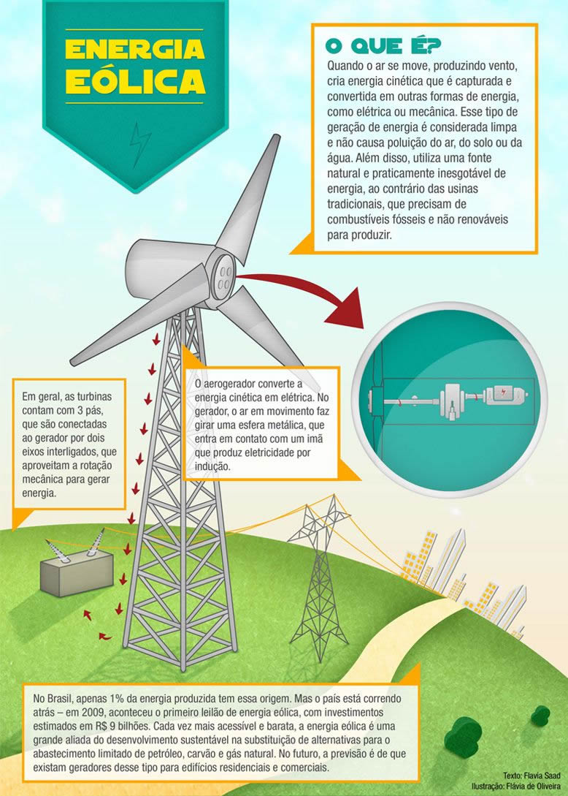
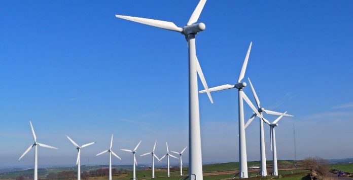

Energia eólica
A utilização da energia eólica comporta numerosas vantagens face às energias tradicionais e mesmo em comparação com outros tipos de energias renováveis, em função do seu maior desenvolvimento.
A energia eólica é muitas vezes não compreendida pelas populações, principalmente pelas populações mais próximas dos parques eólicos, mas a energia eólica possui inúmeras vantagens para a sociedade em geral, desde a redução da dependência dos combustíveis fósseis até à criação de empregos.
Apesar das aparentes vantagens no uso de energia eólica para a produção de energia elétrica, este tipo de aproveitamento energético eólico apresenta também desvantagens e impactos significativos principalmente no uso de grandes aerogeradores, parques e usinas eólicas.
| Vantagens | desvantagens |  |
| É uma tecnologia inesgotável | Como é preciso um fenômeno da natureza para funcionar, às vezes a energia não é gerada em momentos necessários, o que torna difícil a integração da produção dessa tecnologia | |
| Não emite gases poluentes e não gera resíduos | Pode ser superada pelas pilhas de combustível (H2) ou pela técnica da bombagem hidroelétrica | |
| Os parques eólicos podem ser utilizadas também para outros meios, como a agricultura e a criação de gado | Os parques eólicos geram um grande impacto visual devido aos aerogeradores | |
| É uma das fontes mais baratas de energia, podendo competir em termos de rentabilidade com as fontes de energia tradicionais | Causa impacto sonoro, pois o vento bate nas pás produzindo um ruído constante de aproximadamente 43 decibéis, tornando necessário que as habitações mais próximas estejam no mínimo a 200 metros de distância | |
| Não requer uma manutenção frequente, uma vez que sua revisão é semestral | Pode afetar o comportamento habitual de migração das aves | |
|  | ||